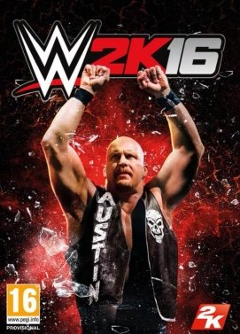
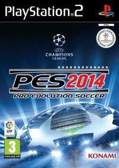

Los Mejores Juegos de Deportes

WWE 2K16
WWE 2K16 es la nueva entrega de la saga de juegos de lucha libre desarrollada por 2K Sports. Este año, el Modo Carrera se verá perfeccionado, con mayor libertad de elecciones y personalización en manos del jugador, y por primera vez en la saga, se contará con más de 120 luchadores de la WWE de todas las épocas. Entre las novedades jugables, destacan un control rediseñado desde cero, nuevos combos y cadenas de golpes y un tipo de I.A mejorada. Como en las últimas ediciones, el modo online ofrecerá encuentros entre jugadores por internet.
Pro Evolution Soccer 14.
Esta nueva entrega de Pro Evolution Soccer para PS3 nos lleva a la temporada 13-14 con el nuevo motor gráfico Fox Engine. Un año más, el simulador futbolístico de Konami vuelve para dar guerra y ponernos en la piel de los mejores jugadores del planeta. Con una jugabilidad mejorada a nivel táctico y una IA más ajustada a la realidad, PES 2014 brinda una selección de nuevos equipos, el nuevo control 360 y unas físicas más trabajadas. Todo al servicio del fútbol más real.
FIFA 2014
La nueva entrega de la saga más laureada del fútbol vuelve a PS3 para revolucionar gráficos y jugabilidad con la que conquistar de nuevo a todos los amantes de este deporte ahora con más equipos. De la mano de EA Sports, esta edición de Fifa es mucho más realista e incorpora más imprevisibilidad al partido, una inteligencia artificial mucho más ajustada y unas físicas visiblemente mejoradas. Un título mucho más técnico que obligará al jugador a vivir el fútbol total con más dificultad y el mayor realismo posible.
Fight Night Champion
La saga de boxeo de Electronic Arts vuelve a PS3 en una entrega que combina el sistema de control de los títulos anteriores, usando el joystick izquierdo para controlar al luchador y el derecho para dar los golpes, con un modo historia que intenta ofrece algo más que una serie de combates. A lo largo de la campaña, descubriremos la historia de Bishop, un boxeador de controvertido pasado, a lo largo de sus más memorables combates, así como sus relaciones con su entrenador y el resto de su entorno.